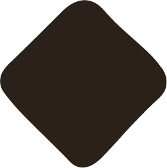

Working file, part two
Cursor, scroll and hover
Your gradient idea made real, then a menu of scroll and hover options. Everything here is live. Move the pointer, scroll inside the frames, hover the cards.
The cursor field
Your idea. A soft wash of yellow and blue that follows the pointer, so the page is never static anywhere, not just in the hero.
You know what you’re building.
Your brand doesn’t say it yet.
Strategic brand design for founder-led businesses.
The blue trails behind the yellow rather than sitting on top of it. That is what stops it reading as one blob, and it is why the two colours keep mixing into new greens and creams as you move.
Turn the dials, then tell me the numbers
Triple-click that line to select it, then paste it to me and I will build exactly that.
What you should know before saying yes
- It has to sit behind everything and never catch clicks. That is straightforward, but it does mean the wash cannot tint your images, only the background around them.
- Contrast is the real constraint. Blue at full strength behind dark coffee text starts eating into legibility. Strength above roughly 0.6 is where I would want to check the text again rather than take it on faith.
- Touch devices have no pointer. On a phone there is nothing to follow, so it either sits still in one place or drifts slowly on its own. I would drift it, so phones still get the feeling.
- Reduced motion turns it off. Anyone who has asked their system to stop animations gets a still version.
- It is cheap to run. Two blurred gradients moved by transform, updated once per frame. It will not slow the site down.
- In dark mode it wants to be about half as strong. Yellow on dark coffee is high contrast, so the same setting that reads as subtle in daylight reads as a lamp at night.
Scroll animations
Scroll inside each frame to see it. Pick the ones you want, and say where.
Hover animations
Hover each frame. On a phone these do nothing, which is why none of them can be the only way to understand something.
Whimsy, element by element
Small, specific, and mostly only visible if you go looking. Whimsy survives being rare and dies of being everywhere.
You already have one. Select any text on this page, or on your site. It highlights in your yellow rather than the browser's blue. That has been in globals.css since the beginning, and it is exactly the register we are aiming at: nobody notices it, and it makes the page feel made.
And you have four unused marks. mark-braces, mark-diamond, mark-dots and mark-heart are sitting in public/img/ doing nothing. They are the most obviously "yours" material available, so several of these use them.

Selected workA mark that breathes
One of your marks sits beside a section heading and drifts, very slowly, forever. Almost subliminal, and it puts your own shapes on the page rather than a generic dot.

Marks adrift
Your marks scattered faintly behind a section, each moving on its own slow path. Pairs with the cursor field, but the two together may be one thing too many.
The logo tips its hat
Your mark leans and grows very slightly under the pointer. It is the one element on every page, so it is the cheapest place to put personality.
Usually four to six weeks, depending on scope.
Always. Southampton based, clients anywhere.
The plus springs
Click one. The plus turns into a cross with a little overshoot rather than a flat rotation. Pure micro-detail, and it costs nothing.
The nav pill slides
Hover the items. A yellow pill travels between them rather than blinking on and off. Small, but it makes the header feel like one object.
Photographs straighten up
Gallery images sit a degree or two off true, like prints laid on a desk, and straighten when you approach. Charming once per case study, twee if it is every image.
The arrow loops
Instead of nudging forward, the arrow turns a full loop and comes back. Noticeably more playful than H5, and it is the sort of thing people mention.
A reward at the bottom
Something small at the very end of the footer that only reacts to people who got all the way down. Hover it. Whimsy is at its safest where only the curious find it.
 4
This page went somewhere else.
4
This page went somewhere else.
The 404
A mark stands in for the zero. Nobody plans to see this page, so it is the one place where being playful costs you nothing at all.
Scroll progress
A hairline of yellow across the very top, filling as you read. It is live on this page right now. Useful as well as pleasant on long case studies.
How much is too much
The failure mode is not any single one of these. It is three of them firing in the same eyeful, which stops reading as care and starts reading as a demo. The test I would apply: at any moment, at most one thing on screen should be doing something you did not ask it to do.
If you want my pick for "a little, throughout, not too much":
The cursor field, gentle, as the one ambient thing. It is everywhere, so it does the "throughout" work by itself and nothing else has to.
W3, W4, W5 and W7, all of which only happen when someone touches something. Interaction whimsy is free: it cannot pile up, because a person can only touch one thing at a time.
W9, because it is a page nobody plans to visit.
Not W2 if you take the cursor field, since that is two ambient things competing. Not W6 beyond one image per case study. W10 is a genuine usability win on long pages, so I would count it as furniture rather than whimsy.
How to tell me
Codes are enough. For example:
- "Cursor field yes, at
size 520 · strength 0.35 · lag 0.12 · trail 0.6 · softness 60." - "S2 on the work grid, S3 on every section heading, S7 on the approach. No to S8."
- "H2 and H3 together on the work cards, H4 on buttons, H6 on text links. H9 is too much."
- "W3, W4, W5, W7 and W9. Nothing else."
- "All of it is too slow" or "all of it is too much" are both useful answers.
You do not have to pick from every list. Saying no to a whole section is a real answer, and restraint usually looks more expensive than the alternative.